🔬 7. Sınıf Fen Bilimleri 1. Dönem 1. Yazılı (MEBİ)
Uzay Araştırmaları • Yıldızların Yaşamı • Fiziksel İş ve Enerji Dönüşümleri • 9 Sorunun Tamamı
0
Mevcut Puan / 100
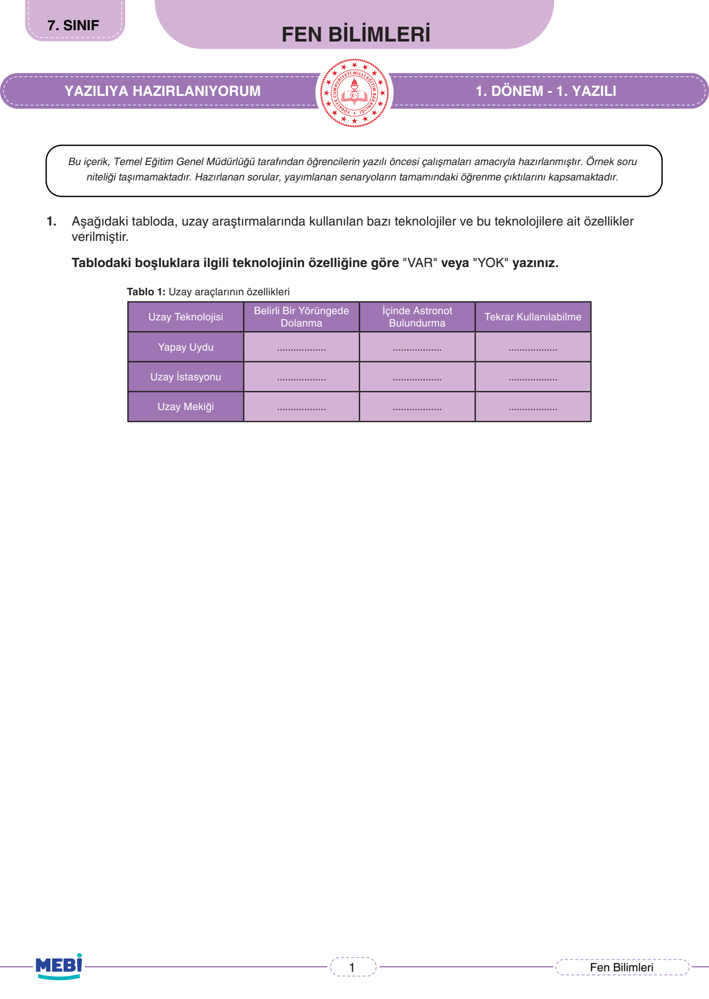
Soru 1
Uzay Araçlarının Özellikleri Tablosu
10 Puan
📌 MEBİ Resmi Öğretmen Çözümü & Model Yanıt:
• Yapay Uydu: Yörüngede Dolanma: VAR | Astronot: YOK | Tekrar Kullanılabilme: YOK
• Uzay İstasyonu: Yörüngede Dolanma: VAR | Astronot: VAR | Tekrar Kullanılabilme: YOK
• Uzay Mekiği: Yörüngede Dolanma: VAR | Astronot: VAR | Tekrar Kullanılabilme: VAR
• Uzay İstasyonu: Yörüngede Dolanma: VAR | Astronot: VAR | Tekrar Kullanılabilme: YOK
• Uzay Mekiği: Yörüngede Dolanma: VAR | Astronot: VAR | Tekrar Kullanılabilme: VAR
Puanlama:
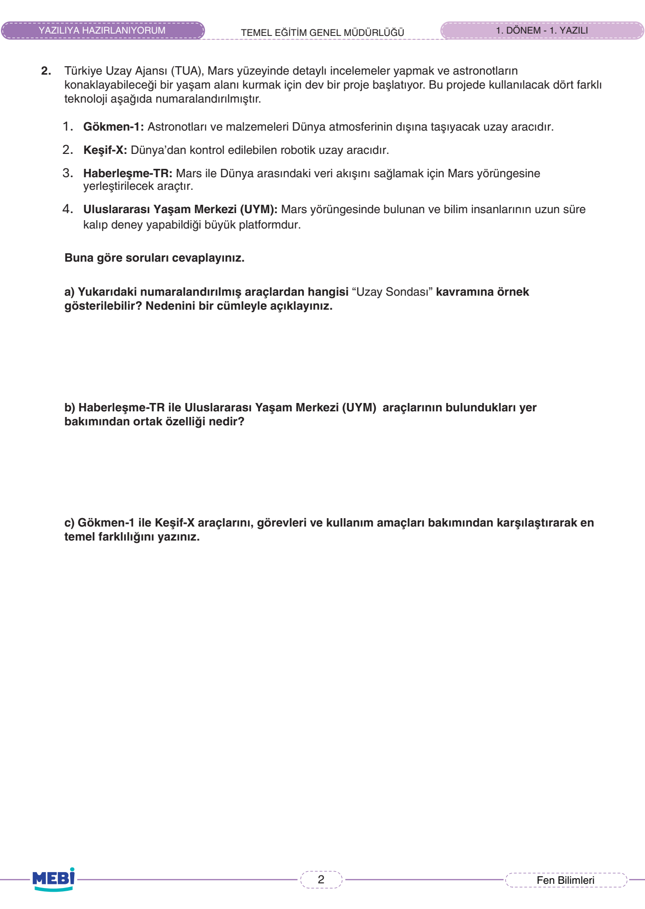
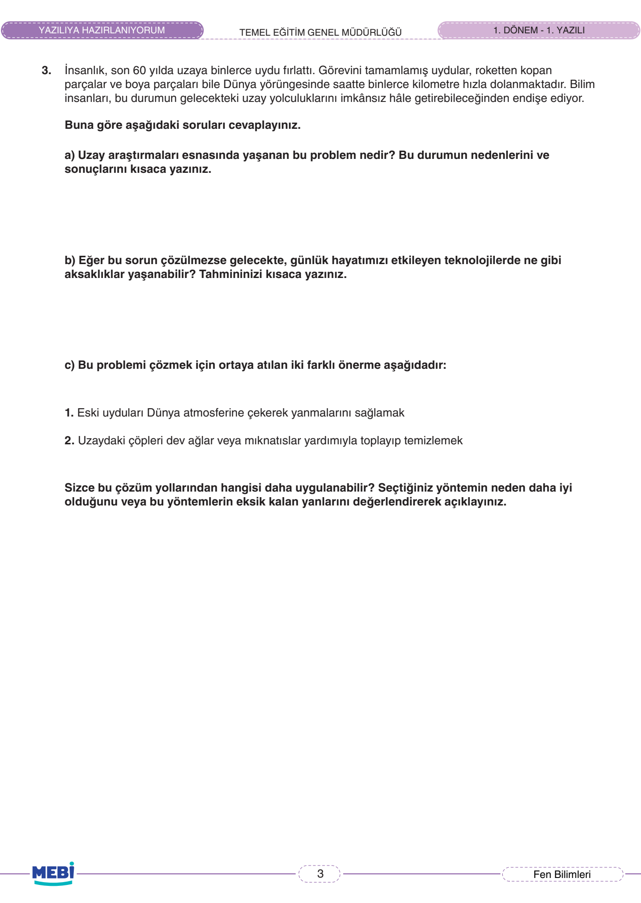
Soru 2
Mars Projesi Uzay Araçları Analizi
15 Puan
📌 MEBİ Resmi Öğretmen Çözümü & Model Yanıt:
a) Uzay Sondası: 2 numaralı Keşif-X aracıdır. Çünkü içinde astronot bulunmayan, gök cisimlerini uzaktan veya yüzeyden incelemek için gönderilen robotik araçtır.
b) Ortak Özellik: Her iki araç da Mars yörüngesinde dolanmaktadır.
c) Temel Fark: Gökmen-1 bir uzay roketidir (astronot ve yükleri uzaya taşır/fırlatır). Keşif-X ise bir uzay sondasıdır (ulaştığı yüzeyde veri ve numune toplayıp analiz yapar).
b) Ortak Özellik: Her iki araç da Mars yörüngesinde dolanmaktadır.
c) Temel Fark: Gökmen-1 bir uzay roketidir (astronot ve yükleri uzaya taşır/fırlatır). Keşif-X ise bir uzay sondasıdır (ulaştığı yüzeyde veri ve numune toplayıp analiz yapar).
Puanlama:
Soru 3
Uzay Kirliliği Problemi ve Çözüm Yolları
10 Puan
📌 MEBİ Resmi Öğretmen Çözümü & Model Yanıt:
a) Problem: Uzay Kirliliği. Görevini tamamlamış uyduların ve roket enkazlarının yörüngede birikmesidir.
b) Günlük Hayata Etkileri: Aktif uydulara çarparak hasar vermesi durumunda GPS (navigasyon) sistemleri bozulabilir, TV ve internet yayınları kesilebilir, hava tahminleri yapılamaz.
c) Çözüm Değerlendirmesi: 1. Yöntem (atmosferde yakmak) çöpleri tamamen yok ettiği için kalıcıdır; ancak çok yüksek irtifadaki uyduları atmosfere çekmek zor olduğundan 2. yöntem (robotik ağ/kıskaç ile toplamak) daha kontrollü bir çözümdür.
b) Günlük Hayata Etkileri: Aktif uydulara çarparak hasar vermesi durumunda GPS (navigasyon) sistemleri bozulabilir, TV ve internet yayınları kesilebilir, hava tahminleri yapılamaz.
c) Çözüm Değerlendirmesi: 1. Yöntem (atmosferde yakmak) çöpleri tamamen yok ettiği için kalıcıdır; ancak çok yüksek irtifadaki uyduları atmosfere çekmek zor olduğundan 2. yöntem (robotik ağ/kıskaç ile toplamak) daha kontrollü bir çözümdür.
Puanlama:
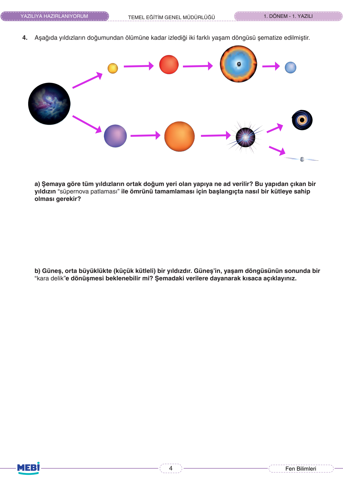
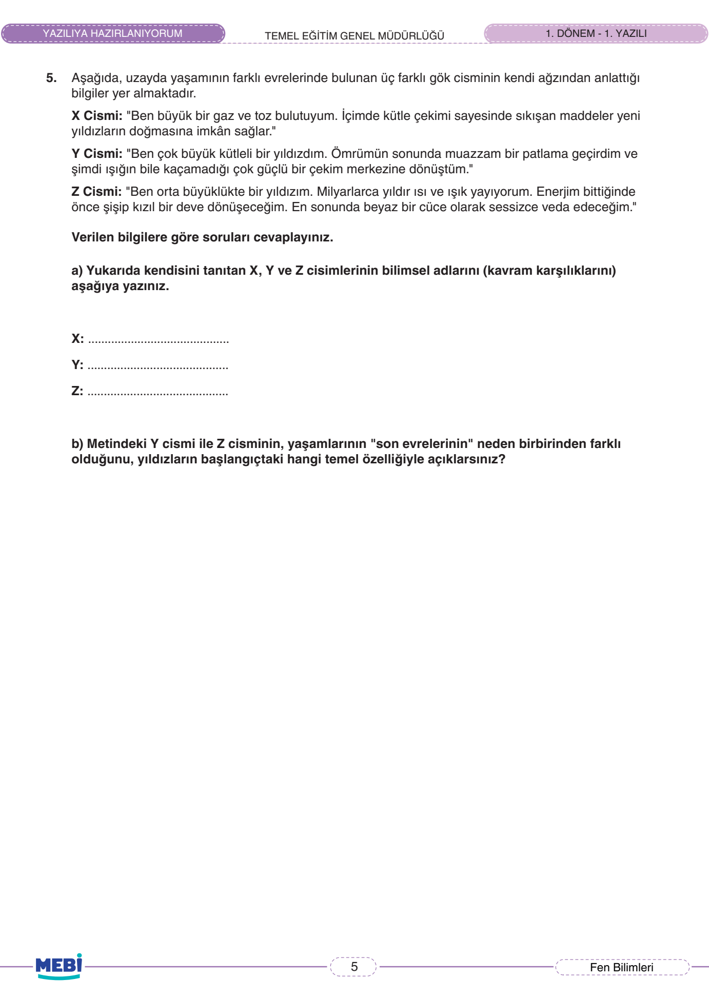
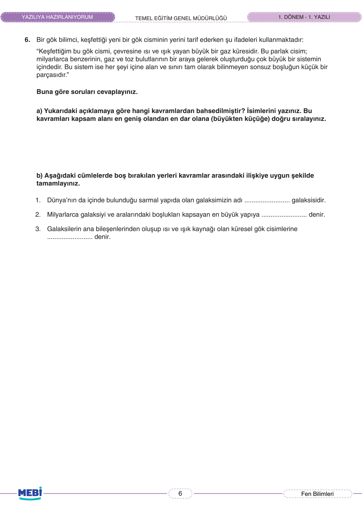
Soru 4
Yıldızların Yaşam Döngüsü ve Kara Delik
10 Puan
📌 MEBİ Resmi Öğretmen Çözümü & Model Yanıt:
a) Doğum Yeri ve Kütle: Tüm yıldızların doğum yeri Bulutsu (Nebula)'dur. Süpernova patlaması için başlangıçta büyük kütleli bir yıldız olması gerekir.
b) Güneş Kara Delik Olur mu? Hayır, beklenemez. Çünkü Güneş orta büyüklükte (küçük kütleli) bir yıldızdır. Sadece büyük kütleli yıldızlar süpernova geçirip kara delik veya nötron yıldızına dönüşür; Güneş ise kızıl devden sonra beyaz cüce olarak ömrünü tamamlayacaktır.
b) Güneş Kara Delik Olur mu? Hayır, beklenemez. Çünkü Güneş orta büyüklükte (küçük kütleli) bir yıldızdır. Sadece büyük kütleli yıldızlar süpernova geçirip kara delik veya nötron yıldızına dönüşür; Güneş ise kızıl devden sonra beyaz cüce olarak ömrünü tamamlayacaktır.
Puanlama:
Soru 5
X, Y, Z Gök Cisimlerinin Bilimsel Karşılıkları
10 Puan
📌 MEBİ Resmi Öğretmen Çözümü & Model Yanıt:
a) Kavram Karşılıkları:
• X: Bulutsu (Nebula)
• Y: Kara Delik (Büyük kütleli yıldızın sonu)
• Z: Küçük Kütleli Yıldız / Güneş (Sonu beyaz cüce)
b) Farkın Temel Nedeni: Yıldızların başlangıçtaki kütleleridir. Başlangıç kütlesi büyük olan yıldızlar süpernovayla kara deliğe dönüşürken, küçük kütleli olanlar patlama yapmadan beyaz cüceye dönüşür.
• X: Bulutsu (Nebula)
• Y: Kara Delik (Büyük kütleli yıldızın sonu)
• Z: Küçük Kütleli Yıldız / Güneş (Sonu beyaz cüce)
b) Farkın Temel Nedeni: Yıldızların başlangıçtaki kütleleridir. Başlangıç kütlesi büyük olan yıldızlar süpernovayla kara deliğe dönüşürken, küçük kütleli olanlar patlama yapmadan beyaz cüceye dönüşür.
Puanlama:
Soru 6
Evren, Galaksi ve Yıldız Kavramları
10 Puan
📌 MEBİ Resmi Öğretmen Çözümü & Model Yanıt:
a) Kavramlar ve Büyükten Küçüğe Sıralaması:
Evren > Galaksi (Gök Ada) > Yıldız
b) Cümle Tamamlama:
1. Galaksimizin adı: Samanyolu galaksisidir.
2. En büyük yapıya: Evren denir.
3. Küresel gök cisimlerine: Yıldız denir.
Evren > Galaksi (Gök Ada) > Yıldız
b) Cümle Tamamlama:
1. Galaksimizin adı: Samanyolu galaksisidir.
2. En büyük yapıya: Evren denir.
3. Küresel gök cisimlerine: Yıldız denir.
Puanlama:
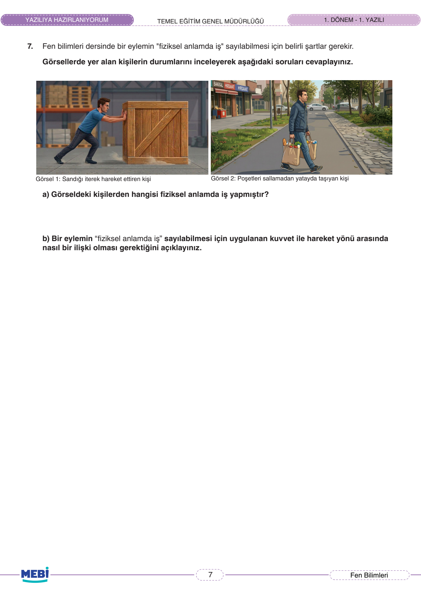
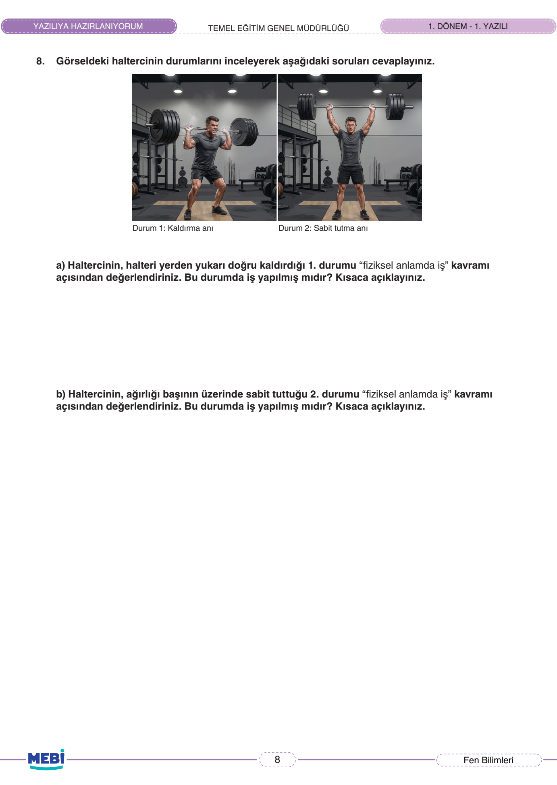
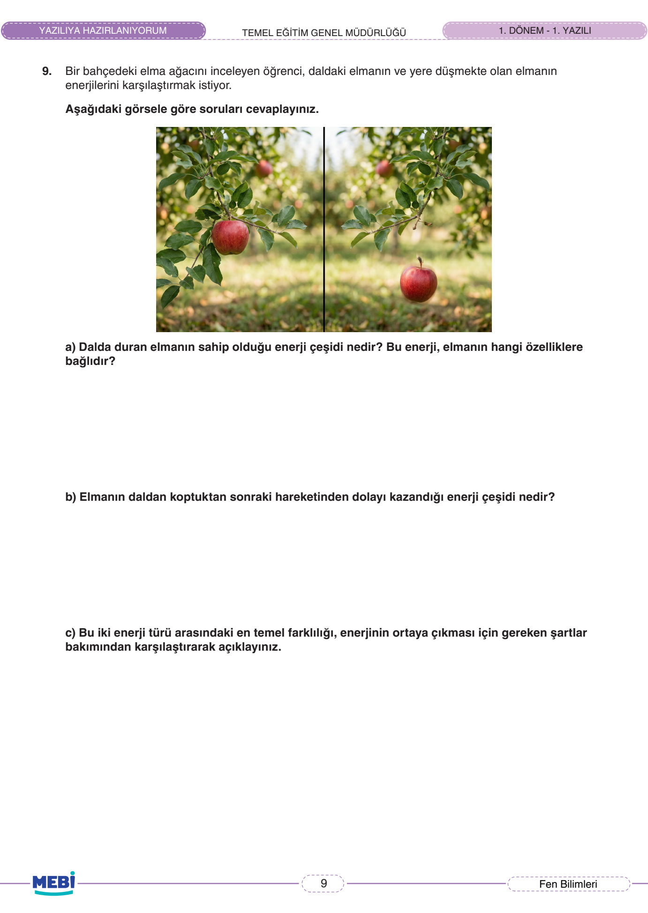
Soru 7
Fiziksel Anlamda İş Kavramı
10 Puan
📌 MEBİ Resmi Öğretmen Çözümü & Model Yanıt:
a) İş Yapan Kişi: Görsel 1'deki kişi (Sandığı iterek hareket ettiren) fiziksel anlamda iş yapmıştır.
b) İş Olma Şartı: Bir eylemin fiziksel anlamda iş sayılabilmesi için cisme bir kuvvet uygulanmalı ve cisim bu kuvvetle aynı doğrultuda yol almalıdır. Görsel 2'de kuvvet yukarı yönlü, hareket yatay doğrultuda (birbirine dik) olduğu için iş yapılmamıştır.
b) İş Olma Şartı: Bir eylemin fiziksel anlamda iş sayılabilmesi için cisme bir kuvvet uygulanmalı ve cisim bu kuvvetle aynı doğrultuda yol almalıdır. Görsel 2'de kuvvet yukarı yönlü, hareket yatay doğrultuda (birbirine dik) olduğu için iş yapılmamıştır.
Puanlama:
Soru 8
Haltercinin Durumlarında İş Analizi
15 Puan
📌 MEBİ Resmi Öğretmen Çözümü & Model Yanıt:
• 1. Durum (Kaldırma Anı): EVET, iş yapılmıştır. Çünkü halterci yukarı yönde kuvvet uygulamış ve halter bu kuvvet doğrultusunda yukarı doğru yer değiştirmiştir (yol almıştır).
• 2. Durum (Sabit Tutma Anı): HAYIR, iş yapılmamıştır. Çünkü halter sabit tutulduğu için yer değiştirme (yol alma) sıfırdır. Yol alınmadığı sürece kuvvet uygulansa bile fiziksel iş yapılmaz.
• 2. Durum (Sabit Tutma Anı): HAYIR, iş yapılmamıştır. Çünkü halter sabit tutulduğu için yer değiştirme (yol alma) sıfırdır. Yol alınmadığı sürece kuvvet uygulansa bile fiziksel iş yapılmaz.
Puanlama:
Soru 9
Kinetik ve Potansiyel Enerji Karşılaştırması
10 Puan
📌 MEBİ Resmi Öğretmen Çözümü & Model Yanıt:
a) Dalda Duran Elma: Çekim Potansiyel Enerjisi'ne sahiptir. Bu enerji elmanın kütlesine ve yerden olan yüksekliğine bağlıdır.
b) Düşmekte Olan Elma: Hareketinden dolayı Kinetik Enerji kazanır.
c) Temel Fark: Kinetik enerji cismin hareket durumundan (süratinden) dolayı ortaya çıkarken, çekim potansiyel enerjisi cismin bulunduğu konumdan (yerden yüksekliğinden) kaynaklanır.
b) Düşmekte Olan Elma: Hareketinden dolayı Kinetik Enerji kazanır.
c) Temel Fark: Kinetik enerji cismin hareket durumundan (süratinden) dolayı ortaya çıkarken, çekim potansiyel enerjisi cismin bulunduğu konumdan (yerden yüksekliğinden) kaynaklanır.
Puanlama:
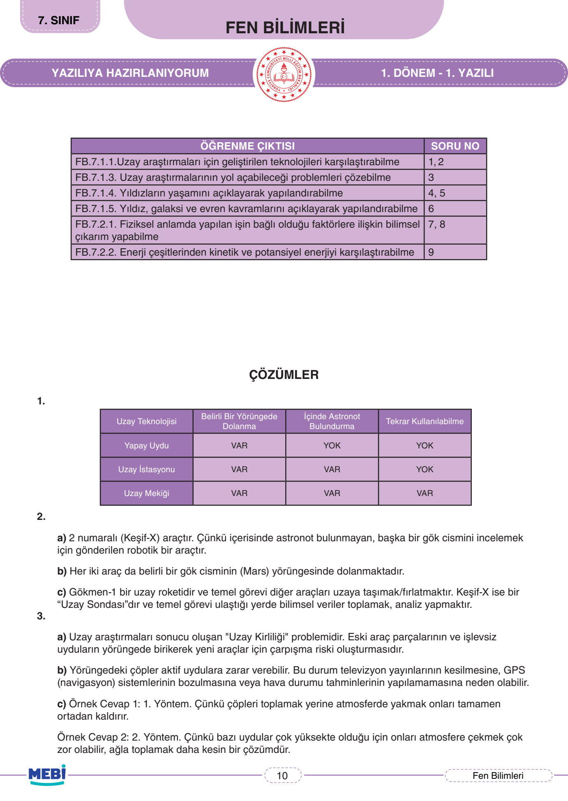
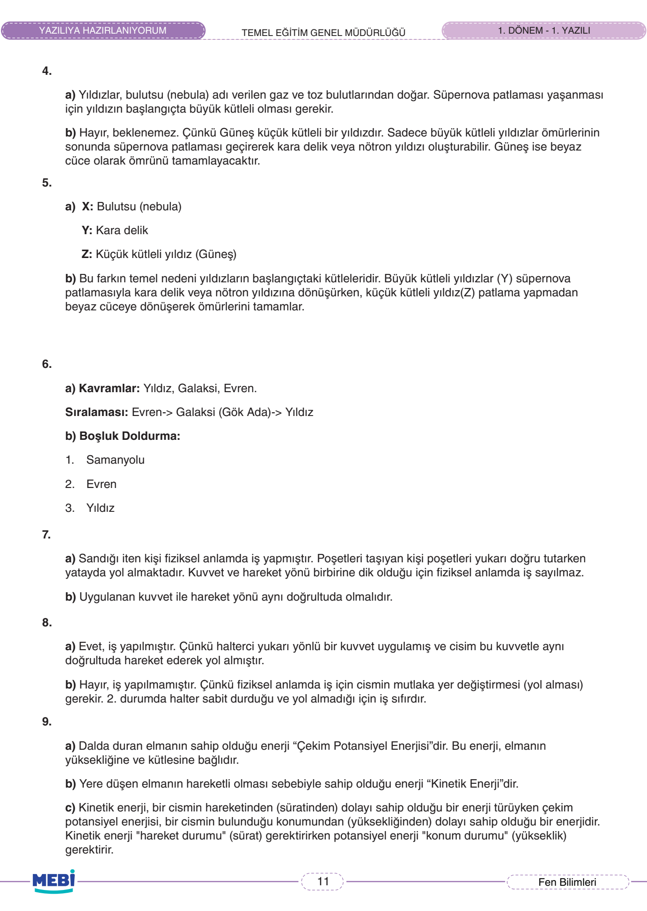